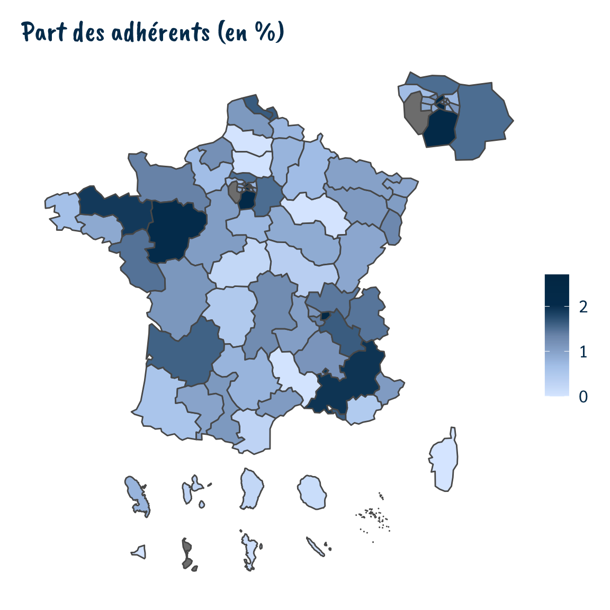
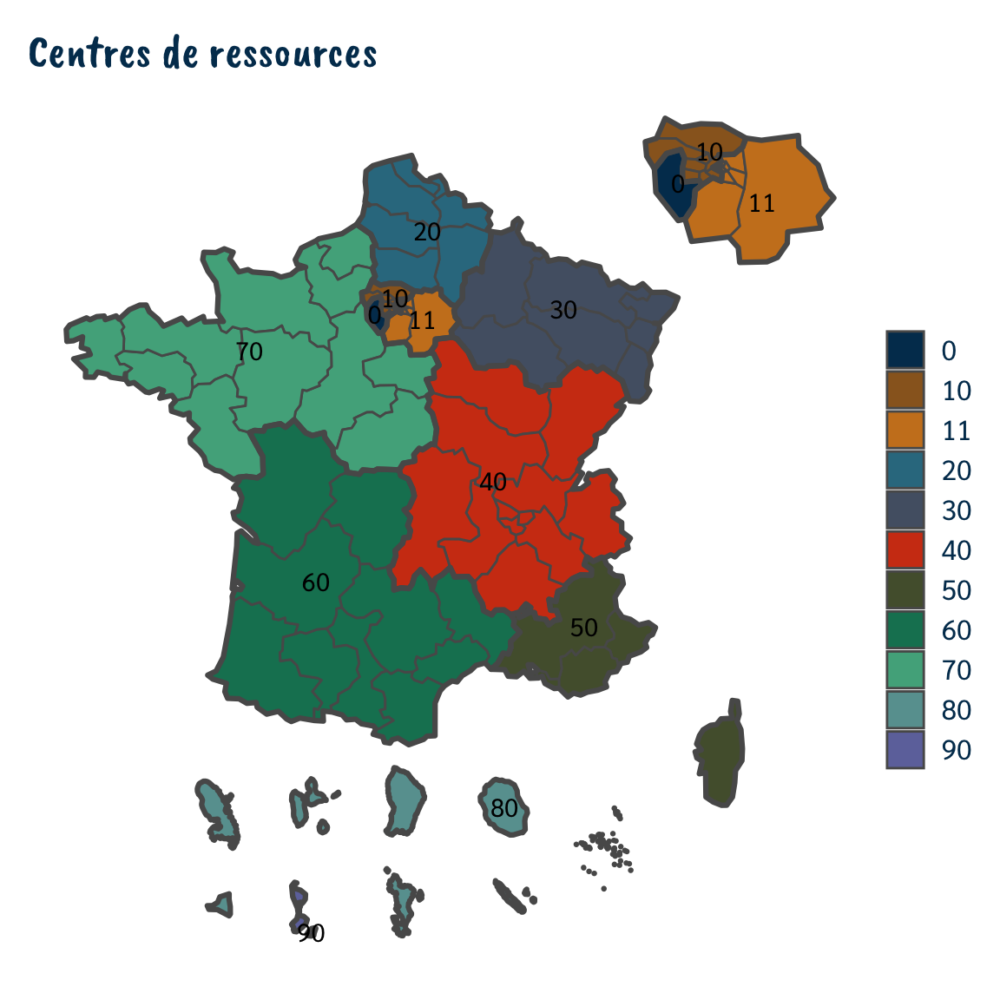
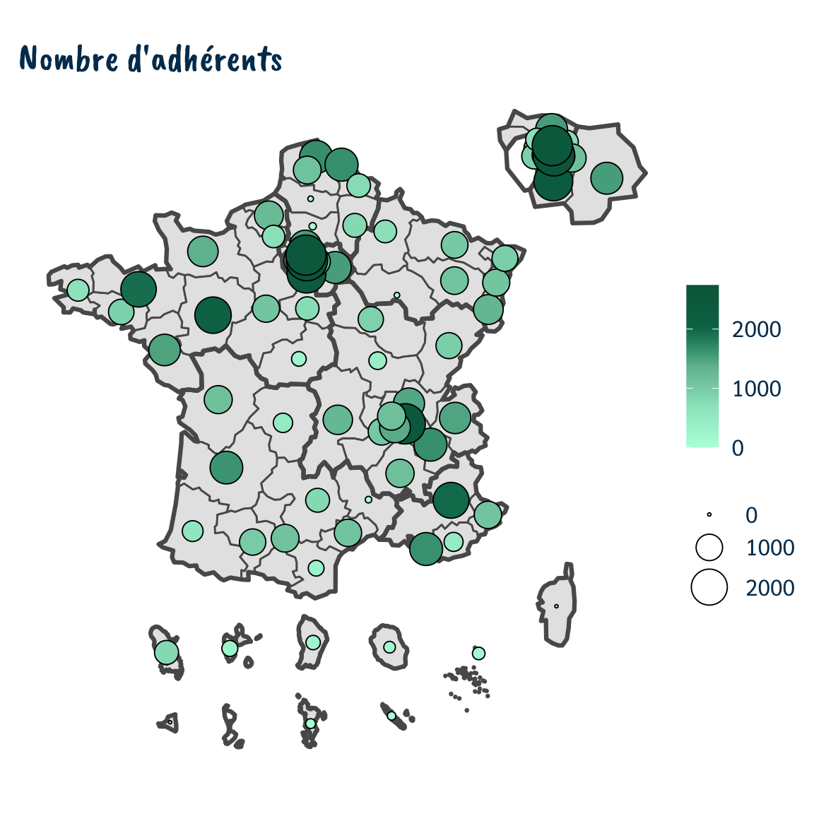
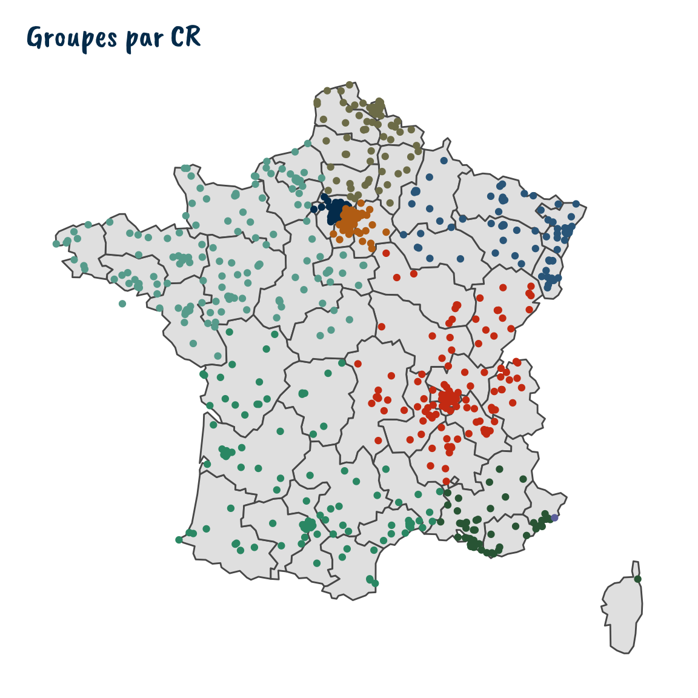

vignettes/utilisation_cartes.Rmd
utilisation_cartes.RmdLa géographie des Scouts et Guides de France ne correspond pas toujours aux zonages administratifs français. Deux zonages géographiques imbriquées existent :
Les groupes locaux n’ont pas de zonage spécifique mais peuvent être placés sur une carte.
Les zonages spécifiques sont directement intégrés dans intuthu. Pour les zones administratives françaises, on peut par exemple utiliser CARTElette (https://github.com/antuki/CARTElette).
On utilisera principalement ici le package sf pour la manipulation de données spatiales et les éléments du tidyverse pour la manipulation et la représentation de données. Un cours introductif est disponible (https://tvroylandt.github.io/r-cartostat/) et comporte d’autres ressources si besoin.
On commence par charger le fond de carte avec la fonction load_shp_sgdf(). On doit lui préciser le niveau souhaité (territoire ou CR). On peut aussi éventuellement ajouter un filtre pour ne pas inclure le zoom sur l’Île-de-France ou les DOMs-TOMs.
shp_terr <- load_shp_sgdf(niveau = "terr") shp_cr <- load_shp_sgdf(niveau = "cr")
On charge ensuite des données externes, par exemple un nombre d’adhérents, arrondi, par territoire. On jointe sur le fond de carte (celui-ci est toujours l’élément sur lequel on vient rajouter les données, pour des raisons de format de fichier).
On peut ensuite réaliser des opérations de discrétisation ou de calcul de part par exemple.
df_adherents <- read_rds(system.file("extdata", "data_adherents_terr.rds", package = "intuthu")) %>% ungroup() shp_terr_adherents <- shp_terr %>% mutate(code_terr_court = str_sub(terr, 1, 5)) %>% left_join(df_adherents, by = "code_terr_court") %>% mutate(part_adherents = nb_adherents_arrondi / sum(nb_adherents_arrondi, na.rm = TRUE) * 100)
Les parties graphiques (thèmes, couleurs, export) qui suivent sont davantage explicités dans la vignette sur la création de graphiques.
Une carte par aplat de couleurs sert à représenter le plus souvent une proportion ou une valeur qualitative. Le défaut principal de ce type de carte est que des grandes surfaces qui ne représentent que peu d’individus faussent l’impression visuelle. Elles sont toutefois simples à interpréter.
shp_terr_adherents %>% ggplot() + geom_sf(aes(fill = part_adherents)) + scale_fill_sgdf_continuous(name = "", reverse = TRUE) + labs(title = "Part des adhérents (en %)") + theme_sgdf_carte()

On peut ajouter en surimpression les contours des centres de ressources et leurs codes.
shp_terr_adherents %>% ggplot() + geom_sf(aes(fill = cr)) + geom_sf(data = shp_cr, alpha = 0, size = 1.1) + geom_sf_text(data = shp_cr, aes(label = cr), family = "Sarabun") + scale_fill_sgdf_discrete(name = "") + labs(title = "Centres de ressources") + theme_sgdf_carte()

Une carte par cercles proportionnels sert souvent à représenter un volume. Le défaut principal de ce type de carte est le recouvrement des cercles qui conduit à manquer parfois de visibilité, notamment sur des zones denses (Île-de-France par exemple).
shp_terr_adherents %>% filter(!is.na(nb_adherents_arrondi)) %>% ggplot() + geom_sf() + geom_sf(data = shp_cr, alpha = 0, size = 1.1) + stat_sf_coordinates(aes(size = nb_adherents_arrondi, fill = nb_adherents_arrondi), shape = 21) + scale_fill_sgdf_continuous(name = "", palette = "pal_sgdf_vert_compa", reverse = TRUE) + scale_size_continuous(name = "", range = c(0.5, 10)) + labs(title = "Nombre d'adhérents") + theme_sgdf_carte()

La localisation des groupes est disponible sous forme de points. Il n’y a pas de recodage. La localisation est donc la même que dans les autres outils de cartographie.
Par conséquent, il faut filtrer en amont sur le fond de carte territoire si on veut afficher quelque chose de propre.
shp_groupes <- load_shp_sgdf("groupes") shp_terr %>% filter(type_geo == "fr_metro") %>% ggplot() + geom_sf() + geom_sf(data = shp_groupes %>% filter(type_geo == "fr_metro"), aes(color = cr)) + scale_color_sgdf_discrete() + labs(title = "Groupes par CR") + guides(color = FALSE) + theme_sgdf_carte()

On peut aussi utiliser le fond de carte shp_sgdf_terr_init pour des cartes sur d’autres zonages que la France métropolitaine.